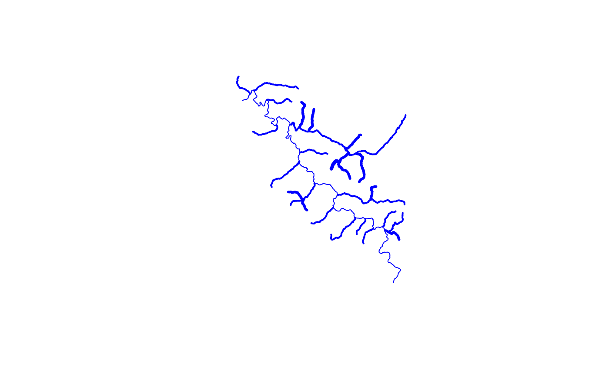

Applies a topological sort and calculates stream level. Algorithm: Terminal level paths are assigned level 1 (see note 1). Paths that terminate at a level 1 are assigned level 2. This pattern is repeated until no paths remain.
If a TRUE/FALSE coastal attribute is included, coastal terminal paths begin at 1 and internal terminal paths begin at 4 as is implemented by the NHD stream leveling rules.
get_streamlevel(x)data.frame with levelpathi, dnlevelpat, and optionally a coastal flag. If no coastal flag is included, all terminal paths are assumed to be coastal.
numeric stream order in same order as input
source(system.file("extdata", "walker_data.R", package = "nhdplusTools"))
test_flowline <- data.frame(
levelpathi = walker_flowline$LevelPathI,
dnlevelpat = walker_flowline$DnLevelPat)
test_flowline$dnlevelpat[1] <- 0
(level <- get_streamlevel(test_flowline))
#> [1] 1 1 1 1 1 1 1 1 1 1 1 1 1 1 1 1 2 2 2 2 2 2 3 2 2 2 2 2 2 2 3 2 2 3 2 2 2 2
#> [39] 3 2 2 3 2 3 3 4 2 2 2 3 3 3 2 2 2 2 2 2 2 1 2 1
walker_flowline$level <- level
plot(sf::st_geometry(walker_flowline), lwd = walker_flowline$level, col = "blue")

test_flowline$coastal <- rep(FALSE, nrow(test_flowline))
(level <- get_streamlevel(test_flowline))
#> [1] 4 4 4 4 4 4 4 4 4 4 4 4 4 4 4 4 5 5 5 5 5 5 6 5 5 5 5 5 5 5 6 5 5 6 5 5 5 5
#> [39] 6 5 5 6 5 6 6 7 5 5 5 6 6 6 5 5 5 5 5 5 5 4 5 4
test_flowline$coastal[!test_flowline$dnlevelpat %in% test_flowline$levelpathi] <- TRUE
(level <- get_streamlevel(test_flowline))
#> [1] 1 1 1 1 1 1 1 1 1 1 1 1 1 1 1 1 2 2 2 2 2 2 3 2 2 2 2 2 2 2 3 2 2 3 2 2 2 2
#> [39] 3 2 2 3 2 3 3 4 2 2 2 3 3 3 2 2 2 2 2 2 2 1 2 1